Префектура Кагосима · Кирисима · станция
Станция Кирисима-дзингу: деревенский вокзал, ради которого стоит сойти с поезда
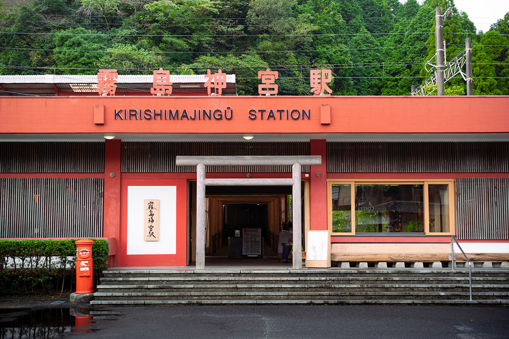
Станцию Кирисима-дзингу когда-то называли «ближайшей станцией, от которой далеко до святилища». В 2024 году её перестроили так, чтобы вокзал сам стал целью поездки: здесь пахнет кедром, продают ремесленные вещи со всей Японии и пекут галеты из местной гречки.
История
Станция, от которой далеко до святилища
Святилище Кирисима, одно из самых почитаемых в префектуре Кагосима, стоит в горах, а ближайшая к нему железнодорожная станция внизу, в долине. Пешком от станции Кирисима-дзингу до святилища около часа. Поэтому местные шутили, что это «ближайшая станция, от которой далеко до святилища».
22 марта 2024 года станцию открыли после большой перестройки. Это часть проекта JR Kyushu «DREAM STATION», который через маленькие местные станции пытается вернуть жизнь в округу. Проект делали вместе с кагосимской компанией IFOO, которая проектирует жилые дома. Её девиз звучит как «осветить ценность, спрятанную во времени», а глава компании родом из Кирисимы и сам вызвался помочь родным местам, откуда уезжает молодёжь.
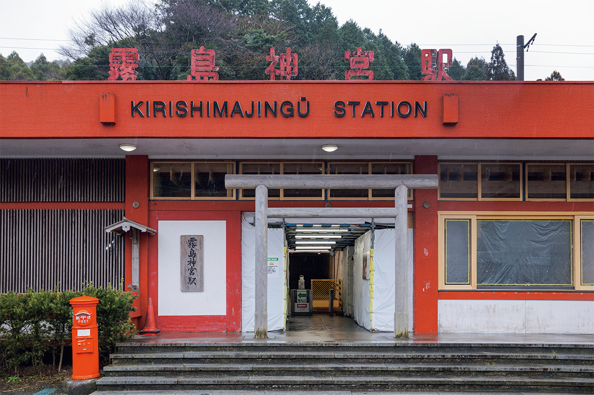
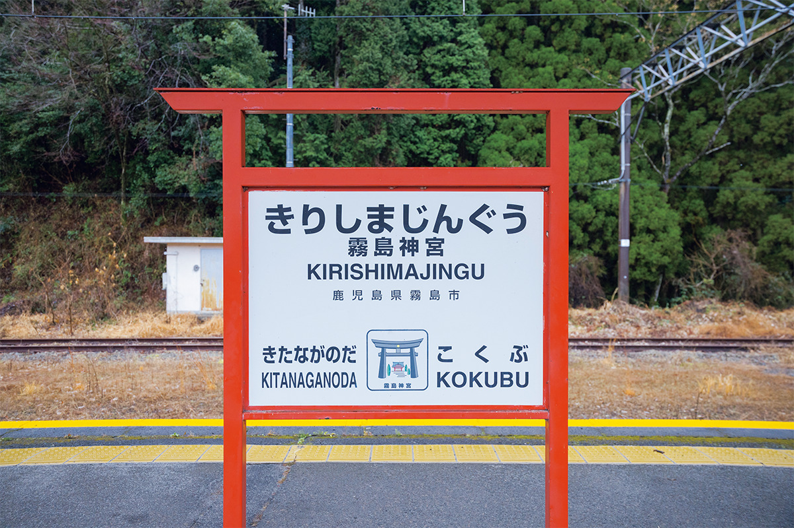
Неудобство решили превратить в достоинство. IFOO придумала «станцию мацуру»: по-японски это слово звучит одинаково в четырёх значениях, «ждать», «почитать богов», «праздновать» и «подносить дары», и все четыре связаны с землёй святилища. Время ожидания поезда здесь должно стать частью путешествия, а не потерянными минутами.
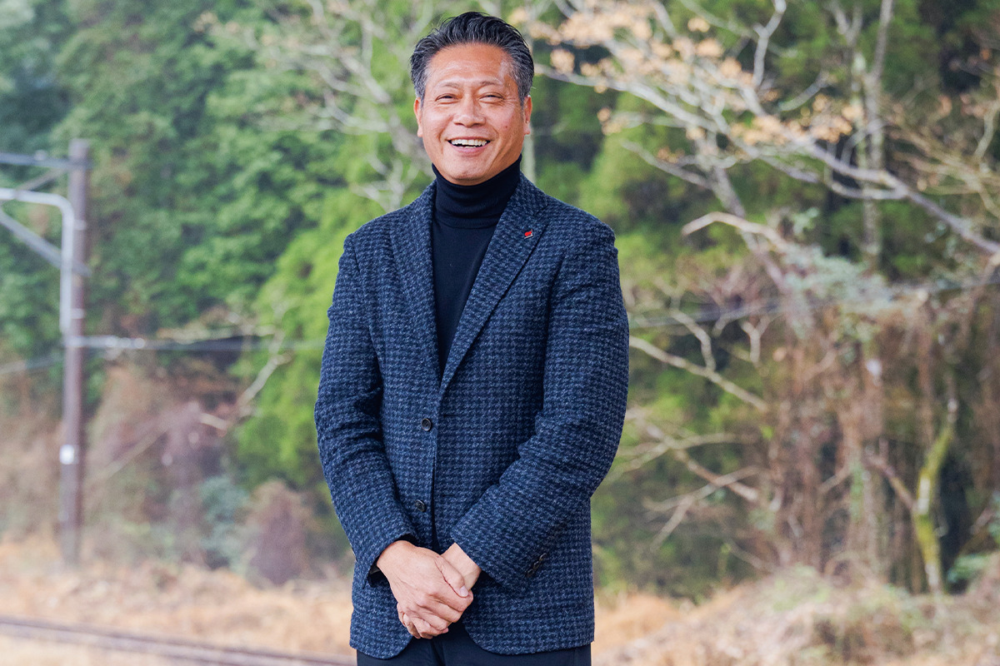
«Было время, когда нашу станцию называли ближайшей, от которой далеко до святилища»
глава компании IFOO
Для здания взяли в основном кедр из префектуры Кагосима. В центре зала стоит четырёхметровый ствол кедра из учебного леса сельскохозяйственного факультета Кагосимского университета. Его задумали как образ священного дерева святилища Кирисима.
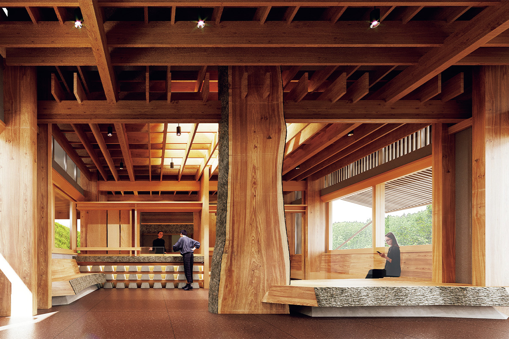
Внутри
Кедр, ремёсла и гречневые галеты
От платформы к выходу ведёт крытый переход, и деревянные рамы в нём стоят одна за другой, как ряд тории. Свет и тени здесь немного таинственные, а в воздухе держится запах местного кедра.
В здании станции два места, ради которых стоит задержаться. В лавке «Дзидзи» собраны вещи ручной работы со всей Японии: керамика, деревянная утварь, бумага васи. В кафе Quili пекут галеты из органической гречневой муки, на сто процентов выращенной в Кирисиме, и они здесь самое популярное блюдо.
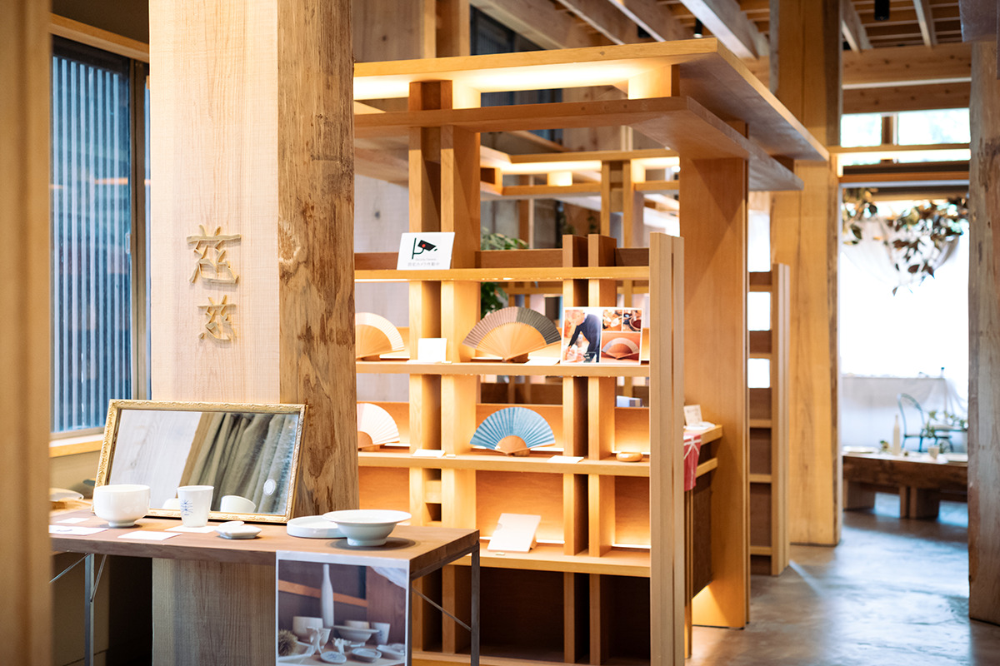
Каменный склад
Лаунж, сауна и галерея у путей
Если немного пройти от станции вдоль путей, попадёте к каменному складу, где раньше хранили грузы. Вокруг него IFOO собрала ещё три места: частную сауну «Сэнсэн», лаунж «Кобо», открытый весь день, и художественную галерею «Тэнтидзин». Старые постройки переделали под сегодняшнюю жизнь, и на то, как это сделано, стоит посмотреть отдельно.
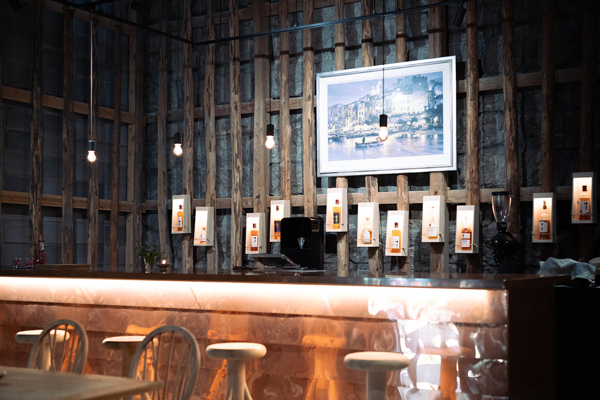
Идею поддержали местные компании, и вокруг станции понемногу складывается небольшой квартал, где можно провести полдня, прежде чем ехать дальше или подниматься к святилищу.
Станция Кирисима-дзингу
- Адрес
- префектура Кагосима, город Кирисима, Кирисима-Окубо
- Как добраться
- от станции Кагосима-Тюо около 50 минут на экспрессе по линии Ниппо
Остановка
Станция Осуми-Окавара
Станция Кирисима-дзингу входит в маршрут поезда «36 плюс 3», туристического поезда JR Kyushu, который за неделю делает круг по Кюсю: по пятницам он идёт из Кагосимы в Миядзаки и останавливается на двух «станциях гостеприимства». Из Кагосима-Тюо до Кирисима-дзингу он едет около полутора часов, а следующей остановкой становится Осуми-Окавара в городе Соо.
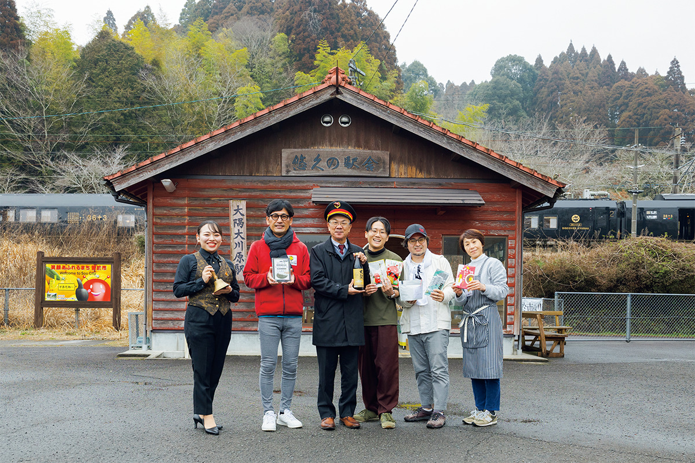
Это станция без персонала, и у неё растёт большое дерево гинкго. Пассажиров здесь встречают жители и фургон с едой. В здании станции продают сётю из Соо, дайкон и сладости с юдзу: город выращивает больше юдзу, чем любое другое место на Кюсю.
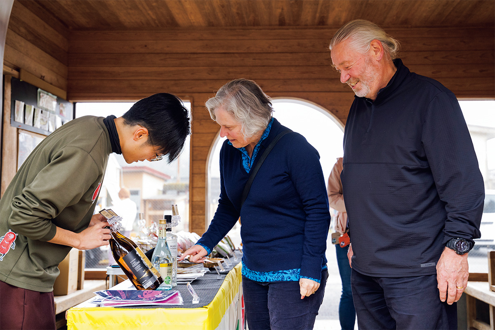
Перед станцией чайная мастерская «Суэёси сэйтя кобо» заваривает чай по одной чашке, а «Такамори кафе» готовит бургер с дичью, 900 иен в 2024 году. К нему можно взять медовый имбирный напиток с юдзу из Соо, 450 иен в 2024 году.
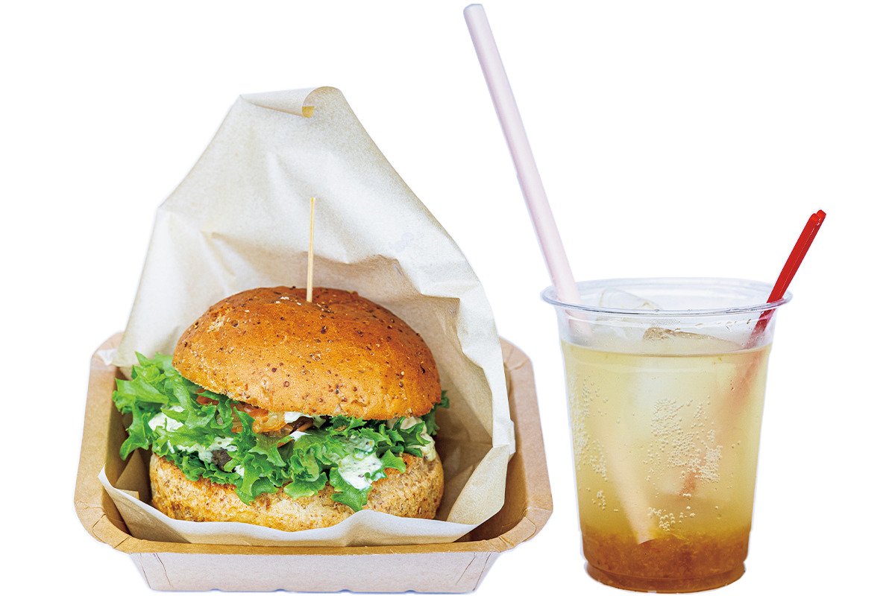
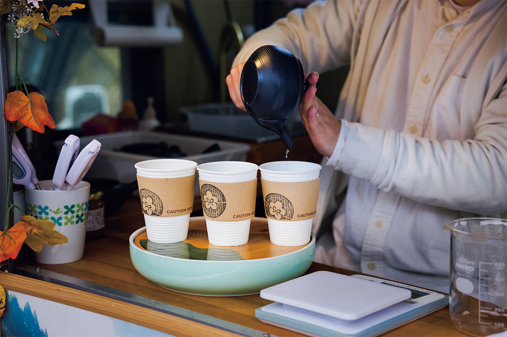
В поезде каждому дают карточку, куда можно записать свою «36-ю историю», найденную в дороге. В конце поездки экипаж зачитывает эти истории вслух.
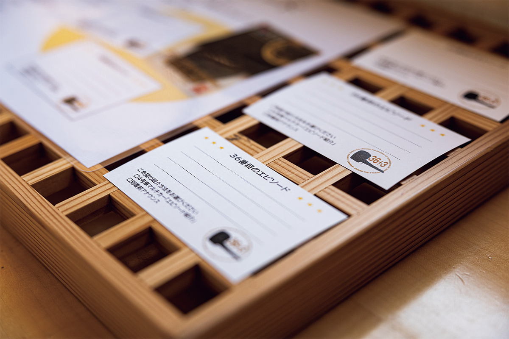
Станция Осуми-Окавара
- Адрес
- префектура Кагосима, город Соо
- Как добраться
- остановка поезда «36 плюс 3» по маршруту Кагосима-Тюо → Миядзаки (по пятницам, данные 2024 года)
Фото: Hiromasa Otsuka, Robert Ippei.